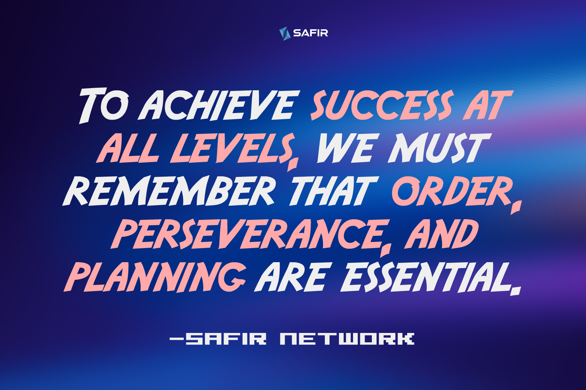

Successful Promoter in Relational Marketing
As the huge team that we are, with an incredible variety of people and dreams, with unique lifestyles and stories; in SAFIR we all have a possibility to achieve our success.
Be careful, we are not talking about success at a financial, personal, intellectual, spiritual, or economic level, only... but about all the formats that success can present to each of the people that make up SAFIR. In other words, success has as many variants as there are people in the world, and there’s a specific way of success when referred to as independent Promoters in Relational Marketing.
The definition of this word is somewhat abstract because it means something different depending on each one. For one person it may mean achieving the highest position in your company, while for another success is staying calm and happy just the way you are.
To make a bit of history, and broaden the spectrum of success that you may have; from SAFIR we have compiled some of the most important phrases defining success, (and their authors are people with clear life examples to support their thoughts!) that have inspired us to achieve the level and importance that SAFIR has today as Relational Marketing Network.
- "People are not remembered by the number of times they fail, but by the number of times they succeed." -Thomas Alva Edison.
- “To be successful, planning alone is insufficient. One must also improvise.” - Issac Asimov.
- "Success is learning to go from failure to failure without despair." -Winston Churchill.
- “I have failed over and over again in my life, that is why I have achieved success.” - Michael Jordan.
Failures are taught in our culture as something to avoid, something to be ashamed of, and above all something negative with no use. In recent years we have seen more concrete and real philosophies appear that understand the usefulness and natural necessity of failure as a prelude to success. You will never know how many times you will fail, therefore resisting and continuing is a vital formula to achieve your goals, and in the end, you will be remembered for your achievements, since failures are many in each person and therefore they are not special or unique.
There is a black-and-white in everything that exists, and the balance of these poles is the key to being really "strong" and achieving the objectives. In the professional field, planning and improvisation are the two preferred antonyms. Having things excessively planned will make us get stuck and stagnate in situations that are not preconceived or at least planned with room for variation. We will then need constant improvisation, in any plan no matter how big or small, without losing the objective (that is clear) but understanding that the path up close can seem sinuous and when we move away, we see the straightest line. The world, and the circumstances that surround us, are changing. We must know how to adapt quickly and as far as possible, improvise.
In addition to the previous definition, a plan fails when it is no longer followed and a goal is impossible when it is no longer pursued. As long as you have clear goals, a flexible plan, and are prepared to face the chain of failures; success will be assured. At SAFIR, we promote resilience as a personal tool, and perseverance as an attitude, since the key is to learn from our mistakes as true fields of training and improvement, not throwing in the towel and not falling into despair in the face of setbacks. necessary.
Without mistakes, success cannot be achieved, without knowing what not to do, it is impossible to touch perfection.
What tasks make a successful promoter?
If we want to apply success as a concept for Promoters of Direct Sells at SAFIR, let’s set the concept of promoter first. When talking about a promoter, refers to the promotion, which is defined as the effort of execution through a trained team to be able to have in time, form, and visually the exhibition of a product in direct and personalized distribution channels for a target audience.
Some habits and qualities make a promoter a successful one, and also basic tasks that the promoter must do to be a real one, and a good one:
- Implement promotional strategies for a brand or product according to the direction of the company
- Execute elements that help the potential customer to make their purchase decision such as benefits, accessibility, warranty, availability, price, etc. of the brand or product
- Advise during and after the purchase process, as well as the resolution of previous doubts
- To be the face of the brand in front of the public, and the analyst of the consideration of the public in the face of the company
- Based on the functions mentioned above, part of the characteristics of a good promoter is having a clear understanding of the execution guidelines of the brand or product. This will translate into the continuous search to establish the perfect point of sale and the ideal marketing development so that the purchasing experience is favorable for the brand and positive for the consumer.
Characteristics of a self-improved successful promoter from SAFIR
- Knows in detail the product that is promoting
- Has a great ability to listen and communicate
- Can make decisions for the benefit of the client
- Takes goal-oriented actions
- Uses a sales process that can be measured and repeated
- Follows up with the prospects and personalize the messages
- Prepares with time and has a working schedule
- Establishes lasting personal relationships
- Considers customer satisfaction as THE success
Now that we have established more specific and generous criteria of what “success” means for an Independent Promoter, here are the 12 habits that we have found that successful people regularly perform according to various publications and interviews.
Perhaps, some of these habits you already apply frequently (and congratulations on that) but if there are not many, please, do not get overwhelmed. There is always time and space to improve, since it is the ultimate goal of every person in this world, to be better than themselves.
The 12 habits of a successful promoter within the Relational Marketing of SAFIR
- Set clear priorities for your day and week
Successful Promoters are clear about their priorities and do what is most important. These people know that what they do has consequences as well as when they don't. That is why it is better to be effective in the appropriate tasks than efficient with small tasks that are not so critical, which gives a clear concept of task hierarchy.
The way to establish priorities may vary, but at SAFIR, we recommend that you do them in two large groups, Urgent and Important. What is urgent can be resolved in the morning, or at least started, and by giving priority to these tasks, what is important can be left for the afternoon, with more tranquility and calm for having started or completed what is urgent.
- Take responsibility for your life in all its aspects
Never complain or blame others for their problems or their failures. Become owner of everything that happens to you, which allows you to take action accordingly. Know that while you can't always control everything that happens, you can control how you react to these unexpected events.
- Create your morning routine
The key to starting a productive day is to start it off on the right foot. Choose tasks that motivate and inspire you. Look at the list of tasks for the day and start your activity with the ones you like the most. There are people who, for example, are activated by playing sports first thing in the morning, reading for breakfast... Choose the ones that best fit you and start the day motivated.
- Practice meditation or mindfulness
Almost 80% of the successful people analyzed confirm that they practice some type of meditation exercise daily, be it yoga or mindfulness at some point in the day. This exercise in many cases does not usually last more than 15 minutes.
- Exercise regularly and eat healthily
They already said it at the time of the Roman Empire, “mens sana in corpore sana” (a healthy mind in a healthy body). It has been shown that healthy eating habits and sports generate motivation, satisfaction, and happiness in people.
- Know yourself at every opportunity
People who stand out know their strengths and weaknesses well and put them into practice to improve and develop them to the best of their ability. They are self-confident but at the same time humble. After all, if you know who you are, your strengths and not-so-strengths will be easier to improve. For these reasons, we recommended that you do your own personal “self-knowledge” exercise by taking a pen and paper and start describing yourself first. Depending on where you want to go, establish your lines of work accordingly so you get your objective done.
- Read and learn constantly
Bill Gates reads an average of 50 books a year for example. But, beware! With this, I do not mean that reading for reading is good since it is essential to select which books are going to generate the greatest impact, motivation, or enjoyment in you. It is important to search for those worth reading in your particular case. As for training, whether self-taught or from third parties, it is one of the most important foundations in professional development since no one is born knowing, and not everything can be learned on the street. This applies to all types of professions or activities to develop in life, however small or large they may be, as happens within all the professionals at SAFIR.
- Be consistent in your goals and do what you say
Successful Promoters are consistent and don't give up easily. Take yourself seriously. If you have proposed something, pursue it. Don't make excuses, pursue the result.
- Have discipline and self-control in your day to day
Stay focused and avoid deviating from the objectives and priorities set, although, with the "super-connected" life that we lead, it is not easy at all.
- Seek support, and guidance
Successful Promoters have the support of other people, whether it's a partner, a friend, a family member, a coach, or a mentor, they don't have to be many. In addition, it is essential to surround yourself with people with a fighting mind.
The proverb already says: "Tell me who you hang out with and I'll tell you who you are", that is, if you surround yourself with successful people, you will be successful too.
- Actions more than ideas
These types of people not only set their goals but also make a detailed plan of action to achieve them. They are quite executing profiles, they make decisions with ease, and have large doses of the initiative. If they want something they don't stand still waiting for it to be offered, but go out and go for it.
- Value your time, which is your life

Successful people take great care of their time because they are interested in taking care of their life and therefore, time = life. They are aware that it is a limited resource and that, therefore, every second they spend on a task has a price. Hence also the importance of delegating certain activities that may not be where you offer the most value and avoiding time thieves that will kill your productivity.
To achieve success at all levels, we must remember that order, perseverance, and planning are essential. Once these habits are achieved daily, we can improve and grow solidly, without unpleasant surprises or foreseeable setbacks.
By achieving this level of peace of mind and productivity, we can truly build strong and lasting relationships with your team and clients, without fear of errors or misunderstandings, thus functioning as advisors to the client on the product and growing your Relational Marketing Network at SAFIR.